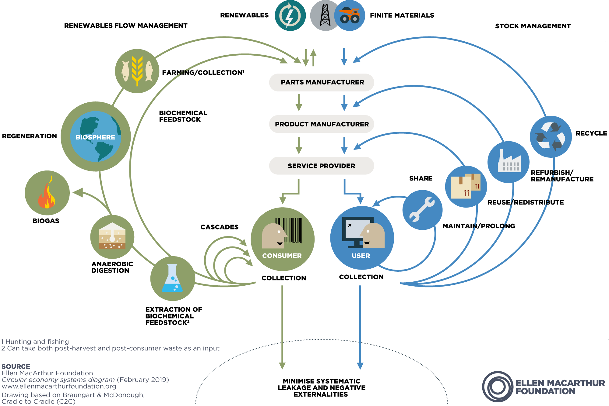
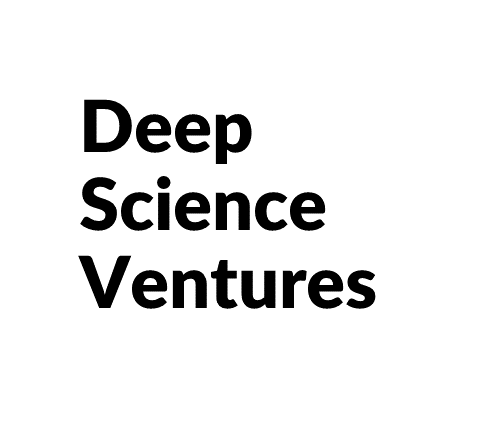

De vez em quando me pergunto o que estou fazendo da minha vida, que a estou desperdiçando e não estou beneficiando ninguém no que faço (nem mesmo a mim). Quando isso acontece, procuro avaliar um pouco o que me deixa feliz. O que me trouxe nas últimas semanas para o estado de fluxo.
Da última vez que fiz isso, estava entediada e até um pouco apática, no trabalho, na vida, em tudo. Então eu fui para minhas distrações. Comecei a ir mais ao parque com os cachorros, comecei a ver um monte de documentários e comecei a aprender um pouco mais sobre desenvolvimento de sites.
Eventualmente, eu estava na rede em minha casa e tive um momento hipotético seguido por um momento a-ha.
Percebi que adoro aprender coisas novas e complexas, mas quando começo a entendê-las, fico entediado.
Também percebi que amo a natureza, os sistemas e o ensino.
Você já ouviu falar da zona de fluxo? Mihaly Csikszentmihalyi explica esse conceito neste vídeo, caso você queira saber mais
Então pensei: E se eu pudesse trabalhar em algo que me faça aprender coisas novas constantemente, que tenha a ver com a natureza e que possa ter um impacto na vida das pessoas?
Então comecei a pensar que não conheço nenhum trabalho que me permita fazer isso. Então eu tive meu pensamento A-ha. Eu mesmo terei que criar um.
Incubadora de Tecnologias Simbióticas

Gráfico borboleta de economia circular da fundação Ellen MacArthur
A ideia é ter algo como um instituto de pesquisa misturado a uma incubadora e plataforma de lançamento focada em "saídas simbióticas - fluxos de entradas".
Idealmente, seria um lugar onde as pessoas ajudassem a transformar fluxos de resíduos não utilizados em insumos para outras "indústrias".
Existem muitas empresas que já fazem isso em algum nível.
Quando eu era consultor, um dos meus clientes era uma empresa que usava “resíduos” da cana-de-açúcar para alimentar o fermento que era então cultivado e assado para se tornar um suplemento alimentar (Biorigin).
Eu pensei que isso era um gênio. Também deu margens muito maiores do que a cana-de-açúcar que era o produto original.
A Cargill também faz isso no negócio de pectinas, onde cascas de frutas são transformadas e se tornam aditivos alimentares, como texturizantes.
Existem muitos outros exemplos de coisas que já acontecem. Mas há muito espaço para tornar isso mais relevante!
Se você quiser saber mais sobre isso, eu recomendo verificar o site da Fundação Ellen MacArthur. Eles falam muito sobre economia circular e têm alguns relatórios e vídeos interessantes
aqui.
Quando eu estava na faculdade, fui para a Alemanha estudar logística reversa na TU-Berlin. Foram apenas dois meses, mas aprendi como funciona o sistema. O governo tem algumas agendas sobre desenvolvimentos específicos e isso repercute para quem está estudando. O Pós-Doutorado conta com uma equipe de alunos de Doutorado, que por sua vez possui uma equipe de alunos de Mestrado, que por sua vez possui alunos de Graduação.
Tudo isso é cuidadosamente orquestrado de forma que a pesquisa possa ser "dividida em diferentes partes". Cada um tem seu papel em dar vida ao grande quadro. Isso foi tão inteligente que pensei. É uma abordagem "de cima para baixo".
No Brasil você vem com o que quer estudar e faz um projeto e tenta se encaixar em alguma coisa. Isso cria mais espaço para a criatividade, mas é menos eficaz se quiser que você resolva um problema específico.
Talvez a ideia seja ter os dois, com estruturas diferentes.
O problema é que na Europa isso é financiado com recursos públicos, e contar com isso no Brasil é no mínimo ingênuo. Claro que pode haver alguma parte dele que usa subsídios, entre outras coisas, mas o modelo de negócios não pode depender exclusivamente disso.
Quero inverter um pouco a lógica de como funcionam as incubadoras / aceleradoras. Eles geralmente procuram cohorts e ideias e depois fazem a curadoria.
Eu estava pensando em afastar essas empresas de uma necessidade comprovada.
Um instituto de pesquisa faz pesquisas que podem se especializar em pesquisa básica ou podem ser orientadas para a pesquisa aplicada.
No entanto, no Brasil não existem associações ou institutos de pesquisa como os da Alemanha, como: Fraunhofer, Max Planck, Leibniz e Helmholtz. Existem alguns institutos de pesquisa privados, como Dupont, IBM e Vale e dois exemplos públicos são Embrapa e CNPEM (Centro Nacional de Pesquisa em Energia e Materiais).
Uma incubadora apóia organizações iniciantes e geralmente oferece (1) um local físico; (2) serviços comerciais; (3) serviços de marketing; (4) serviços técnicos; (5) apoio financeiro (vinculando o empreendedor a fontes de financiamento e investimento); e (6) serviços de rede e informações.
Pelo que imagino, poderia ter três modelos diferentes (inspiração a partir de uma conversa com Julia).
Adaptando de forma reativa: Exemplo: As empresas A, B, C da indústria de carnes devem descartar seus resíduos. Seríamos o centro para o qual eles se voltariam. Encontraríamos formas de reaproveitar isso em outra indústria que já existe ou que ainda não existe (no Brasil). Então iríamos nos juntar a eles ou criar uma nova empresa a partir disso. Esta pode ser a principal fonte de renda para ajudar a sustentar o resto.
Atenuando Proativamente: Conhecemos muitas externalidades que certas atividades acarretam. Criaríamos um roteiro de iniciativas que seguiríamos e mostraríamos de forma proativa essas soluções para os participantes atuais ou ajudaríamos a criar novas empresas.
Evitando impactos: Isso pode envolver uma abordagem mais tecnológica. A ideia é "antever" que tipo de simbiose pode ocorrer entre as novas tecnologias (biotecnologia, ciência dos materiais, energia etc.) e substituir as externalidades prejudiciais que suas contrapartes possam ter. Exemplo: Cogumelo ou proteína de algas marinhas em vez de carne vermelha.
A visão
"Há um projeto no qual estou trabalhando com um grupo. E acho que descobri uma maneira de fazê-lo melhor, mais rápido e mais barato. Vou ser como um falcão. Estou prestes a atacar . Não vou ser um abutre. Um abutre espera até que as coisas desmoronem e, em seguida, vem com uma solução. Mas eu não estou esperando. Vou mergulhar. Como um falcão. Um falcão agarra o rato enquanto ele está ainda vivo "
Acho que essa frase resume muito do que são grandes corporações. Já lidei muito com abutres e quando tento ser um falcão, fico muito desanimada.
Não quero ser um trampolim para os "privilegiados" como os aceleradores são onde só 2% das coortes conseguem (só os melhores que já chegaram a um determinado ponto). Há definitivamente mérito nisso. Eu só quero lidar com isso de outra maneira.
Quero ajudar a resolver o problema e ser o começo para os melhores, não necessariamente o passo final para a independência. Independente de origens sociais / econômicas. Quantas dessas start-ups que realmente geram receita têm subestimado as pessoas que as lideram?
Esta é uma grande mudança de paradigma . Quase todos os que já vi envolvem-se com submissões de "coorte", de bolsas acadêmicas a desafios de aceleração.
É um processo de longo prazo, mas não queremos melhorar a mentalidade atual. Temos que educar as gerações mais jovens para amar as sinergias e aplicá-las em todas as novas indústrias e empresas que surgirão disso.
Vamos ajudar a desenvolver uma equipe que vai enfrentar muitos desses desafios e, em seguida, "repassá-los".
Queremos pessoas que encontrem seu "fluxo" nessas situações.
Não queremos ser um investidor de "dinheiro" ou a "plataforma de lançamento da fase final".
Não queremos ser o centro de conhecimento para aplicação.
Nos queremos ter uma comunidade de pessoas que vão desde os "especialistas no assunto" até o jovem aprendiz que ainda não fez faculdade, mas que pode ser orientado para trabalhos técnicos e eventualmente pode até ir para o " direito "faculdade uma vez que encontraram suas paixões.
Eles vão impulsionar a mudança. Imagine quantas pessoas brilhantes não promovemos porque não podemos vê-las? Estamos apenas rasgando a superfície com aqueles que já fizeram isso!
Algumas referências que podem ajudar a moldar o modelo de negócios
Innovation endeavors
A Innovation Endeavors investe em fundadores visionários, tecnologias transformacionais e ecossistemas emergentes para um novo mundo.
Elemental
Tem a missão de redesenhar os sistemas que estão na raiz de nossa crise climática.
Modelo sem fins lucrativos para financiar a implantação de tecnologia climática. Romper as barreiras à inovação junto com os empreendedores nos fornece uma visão única da política, do mercado e da inovação tecnológica necessária para construir sistemas para elevar as pessoas e comunidades em todo o mundo.
Como a Alemanha está ganhando ao transformar sua pesquisa em aplicação comercial
O país está usando a ciência para obter benefícios econômicos.
Deep Science Ventures

Nós sintetizamos conhecimento, talento e capital em empreendimentos científicos ideais.
Isso leva a melhorias no nível do setor em energia, agricultura, saúde e computação.
Singularity University
Singularity University é uma comunidade global de aprendizagem e inovação que usa tecnologias exponenciais para enfrentar os maiores desafios do mundo e construir um futuro melhor para todos.
Então, como chegar lá?
Esta é uma pergunta difícil, sem resposta certa. Eu realmente preciso de toda a ajuda possível para dirigir esta parte. Obviamente, precisarei de muitos parceiros, críticos, entusiastas e céticos para chegar lá (ou em algum lugar por aí).
Portanto, o primeiro passo foi criar este site.
Então, eu quero espalhar a palavra. Quero falar com todos que podem ajudar a fazer isso tomar forma. Preciso de todas as críticas que puder receber.
Eu quero entrar na comunidade de pesquisa e ensino também. Não só para ser mais consistente, mas também porque gosto muito de ensinar. Isso me dá muita satisfação.
Também quero começar a aprender sobre inteligência artificial e como isso pode ser aplicado às relações simbióticas lá fora. Há tantas informações que podemos não ver! E tantas conexões de pessoas que perdemos.
Eu me cansei de cuspir tudo isso, então acho que vou precisar de um lugar para recarregar minha energia e cérebro e me reconectar aos motivos. Então, vou colocar isso nos planos também.
Eventualmente, posso encontrar os parceiros certos. Aqueles que compartilham uma visão semelhante à minha e que desejam participar dela (provavelmente irei encontrar os parceiros errados ao longo do caminho também!).
Então provavelmente estarei velho, mas terei gostado do caminho para onde quer que eu vá!
Acredito que o futuro está nas algas, bactérias, fungos. Todos os microrganismos que ainda não descobrimos.
Eles vão liderar a próxima revolução. Especialmente como substitutos para produtos / soluções atuais que não são tão agressivos ao meio ambiente.
Confira por exemplo essas coisas legais que já estão acontecendo!
Alimentos, rações, cosméticos, fertilizantes, combustíveis, etc.
Podemos ter alternativas de veganismo que possam ser cultivadas mais rapidamente, mais baratas e com possibilidades neutras ou de sequestro de carbono?
Agora que temos mais poder de computação, conseguimos sequenciar o DNA de mais e mais tipos de bactérias. Isso desencadeou muitas aplicações potenciais porque agora estamos aprendendo sobre este mundo "invisível" que nos rodeia.
 Português
Português English
English